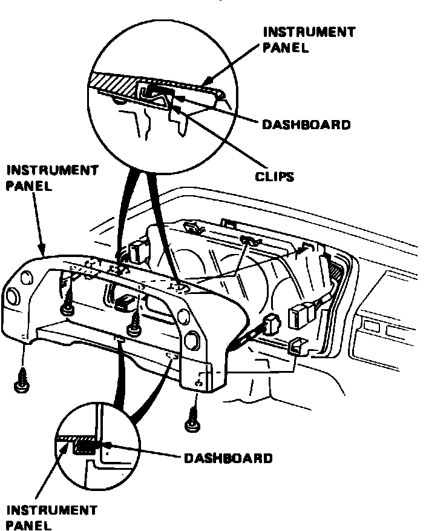

Instrument Cluster / Carrier: Service and Repair
Fig. 15 Instrument panel removal. Legend:

On Legend models equipped with air bag restraint system, use extreme care when working around steering column or center console area to avoid serious personal injury. All electrical harnesses for this system are covered with a yellow outer insulation, with related components located in the steering column, center console, dash panel and front fenders. It is recommended that only authorized personnel work on vehicles with this type of restraint system.
1. Disconnect battery ground cable.
2. Remove instrument panel attaching screws and the instrument panel, Fig. 15.
3. Remove instrument cluster attaching screws, then pull cluster away from dash.
4. Disconnect speedometer cable and electrical connectors from instrument cluster, then remove the cluster from vehicle.
5. Reverse procedure to install.